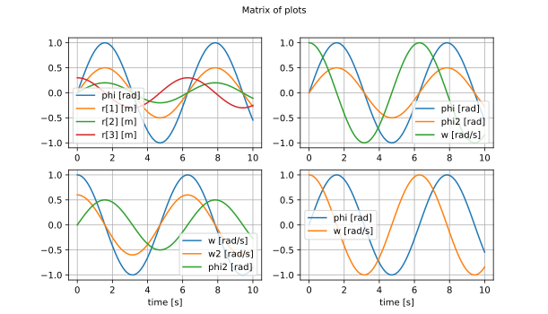

Result
ModiaMath.Result — Module.module ModiaMath.ResultOrganize and plot simulation result data (time series). The result data of ModiaMath.simulate! is returned in one of the formats supported by this module. The ModiaMath.plot function of this module allows to plot the result data by giving the signal names. The legends/labels of the plots are automatically constructed by the signal names and their unit. Example:
ModiaMath.plot(result, [ (:phi,:r) (:phi,:phi2,:w);
(:w,:w2,:phi2) (:phi,:w) ],
heading="Matrix of plots")generates the following plot:

Main developer
Martin Otter, DLR - Institute of System Dynamics and Control
ModiaMath.Result.RawResult — Type.mutable struct RawResultHold result data in a Float64 matrix (first column time, i-th column variable i). Typical usage:
raw = RawResult(100,3) # Initial storage: 100 time points, 3 variables
storeRawResult!(raw, [1.0, 2.0, 1.0])
storeRawResult!(raw, [2.0, 3.0, 5.0])
...
res = getDictResult(res, ["time", "r[1]", "r[2]"]
plot(res["time"], res["r[1]"])If initial storage is not sufficient, it is automatically doubled.
mutable struct ResultWithVariablesStruct that is generated as a result of ModiaMath.simulate!(...), if the model is a Modia3D.AbstractComponentWithVariables struct.
ModiaMath.Result.closeAllFigures — Method.ModiaMath.closeAllFigures()Closes all open figures.
ModiaMath.Result.closeFigure — Method.ModiaMath.closeFigure(figure::Int)Closes figure with figure number figure.
ModiaMath.Result.getStringDictResult — Method.getStringDictResult(model, res)Return dictionary of result, from raw result data structure raw.
ModiaMath.Result.plot — Method.ModiaMath.plot(result, names; heading="", grid=true, xAxis= :time,
figure=1, prefix="", reuse=false, maxLegend=10)Plot time series of the result defined by the names keys (Symbol or String). The keys (and their units, if available in the result) are automatically used as legend. Units can be either added by using package Unitful if result is just a dictionary, or it can be added by using package ModiaMath.Result, where units are defined as elements of the variable definition.
Arguments
Argument result maybe one of the following:
- A dictionary
Dict{AbstractString,Any}. The Dict Value can be
(a)Vector{Number},
(b)Matrix{Number},
(c) a vector of structs where the field that shall be plotted is aNumber, or
(d) a vector of structs and a function is provided to compute aNumberfrom the struct (this function must be stored as value in a dictionaryDict{AbstractString,Function}and this dictionary is returned from functionModiaMath.variablesDependingOnStruct(struct);see last example below).
Note, before passing data to the plot package, it is converted to Float64. This allows to, for example, also plot rational numbers, even if not supported by the plot package. - An instance of struct
ModiaMath.Result - An object for which function
ModiaMath.resultTimeSeriesis defined.
Argument names defines the diagrams to be drawn and the time series to be included in the respective diagram:
- If names is a Symbol or String, generate one diagram with one time series.
- If names is a Tuple of Symbols/Strings, generate one diagram with the time series of the given keys
- If names is a Vector or Matrix of Symbols/Strings/Tuples, generate a vector or matrix of diagrams.
Remaining arguments:
heading::AbstractString: Optional heading above the diagram.grid::Bool: Optional grid.xAxis: Name of x-axis (Symbol or AbstractString).figure::Int: Integer identifier of the window in which the diagrams shall be drawn.prefix::AbstractString: String that is appended in front of every legend label (useful especially if reuse=true)reuse::Bool: If figure already exists and reuse=false, clear the figure before adding the plot.maxLegend::Int: If the number of legend entries in one plot command > maxLegend, the legend is suppressed. All curves have still their names as labels. The curves can be inspected by their names by clicking in the toolbar of the plot on buttonEdit axis, curve ..and then onCurves.
Examples
import ModiaMath
using Unitful
t = linspace(0.0, 10.0, 100)
result = Dict{AbstractString,Any}(
"time" => t*u"s", "phi1" => sin.(t)u"rad" , "phi2" => 0.5*sin.(t),
"w1" => cos.(t)u"rad/s", "w2" => 0.6*cos.(t))
# 1 signal in one diagram
# (legend = "phi1 [rad]")
ModiaMath.plot(result, :phi1)
# 3 signals in one diagram
ModiaMath.plot(result, ("phi1", :phi2, :w1), figure=2)
# 3 diagrams in form of a vector (every diagram has one signal)
ModiaMath.plot(result, [:phi1, :phi2, :w1], figure=3)
# 4 diagrams in form of a matrix (every diagram has one signal)
ModiaMath.plot(result, ["phi1" "phi2";
"w1" "w2" ], figure=4)
# 2 diagrams in form of a vector
ModiaMath.plot(result, [ (:phi1,:phi2), (:w1) ], figure=5)
# 4 diagrams in form of a matrix
ModiaMath.plot(result, [ (:phi1,) (:phi2,:w1);
(:phi1,:phi2,:w1) (:w2,) ],figure=6)
# Plot w1=f(phi1) in one diagram
ModiaMath.plot(result, :w1, xAxis=:phi1, figure=7)
# Append signal of the next simulation run to figure=1
# (legend = "Sim 2: phi1 [rad]")
result[:phi1] = 0.5*result[:phi1]
ModiaMath.plot(result, :phi1, prefix="Sim 2: ", reuse=true)
# Compute and plot variables that depend on the result vector
mutable struct MyThermodynamicState
p::Float64
T::Float64
end
specificEnthalpy(state::MyThermodynamicState) = 2.0*state.T
dynamicViscosity(state::MyThermodynamicState) = 2.0*state.p
const dependentVariables = Dict{AbstractString,Function}("h" => specificEnthalpy,
"eta" => dynamicViscosity)
ModiaMath.variablesDependingOnStruct(state::MyThermodynamicState) = dependentVariables
state = MyThermodynamicState[]
for i = 1:length(t)
push!(state, MyThermodynamicState(i*2.0,i*3.0))
end
result = Dict{AbstractString,Any}("time" => t, "state" => state)
ModiaMath.plot(result, ("state.p", "state.T", "state.h", "state.eta"))The 5th example above (2 diagrams in form of a vector) give the following plot:

ModiaMath.Result.resultTable — Method.table = resultTable(result)Return the variables stored in result in form of a DataFrames table (which can then be printed/showed in various forms).
Base.show(io, result) is defined to print resultTable(result), in case result is of type ModiaMath.ResultWithVariables.
Examples
import ModiaMath
using Unitful
t = range(0.0, stop=10.0, length=100)
result = Dict{AbstractString,Any}()
result["time"] = t * u"s";
result["phi"] = sin.(t)u"rad";
# Print table of the variables that are stored in result
println("result variables = ", ModiaMath.resultTable(result))
# Results in
result variables =
│ Row │ name │ elType │ sizeOrValue │ unit │
│ │ String │ String │ String │ String │
├─────┼────────┼─────────┼───────────────┼────────┤
│ 1 │ phi │ Float64 │ (100,) │ rad │
│ 2 │ time │ Float64 │ (100,) │ s │
ModiaMath.Result.resultTimeSeries — Method.(xsig, xsigLegend, ysig, ysigLegend) =
ModiaMath.resultTimeSeries(result, name, xLabel::Bool, xAxis)For a desired result data structure, this function has to be provided to return the x-vector (xsig), the y-vector (ysig) and the legend of the x-vector (xsigLegend), and of the y-vector (ysigLegend) as Strings, given the key of the y-vector (name) and the key of the x-vector (xAxis). If xLabel=false the legend of the x-vector should be an empty string ("").
ModiaMath.Result.storeRawResult! — Method.storeRawResult!(res, v::Vector{Float64})Store vector v in result data structure res.